Open Studio מול שש הפלטפורמות איך זה נראה, איך זה מרגיש
השוואה מסך מול מסך: Kunstmatrix, Artsteps, Arte, MyGallery3D, ArtRabbit ו‑CUR8, ולצידן Spotify כמודל לחוויה שאנחנו רוצים. כל התמונות הן צילומי מסך אמיתיים מהאתרים ומהאפליקציות (אוקטובר 2026), בגודל מסך של אייפון.
Open Studio · בית
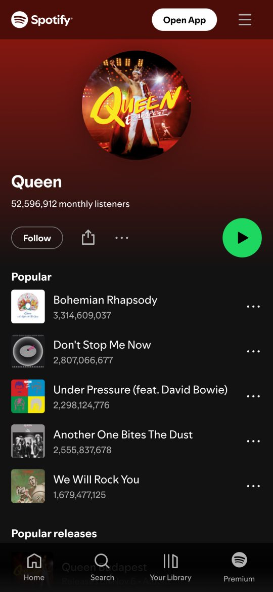
Spotify · עמוד אמן
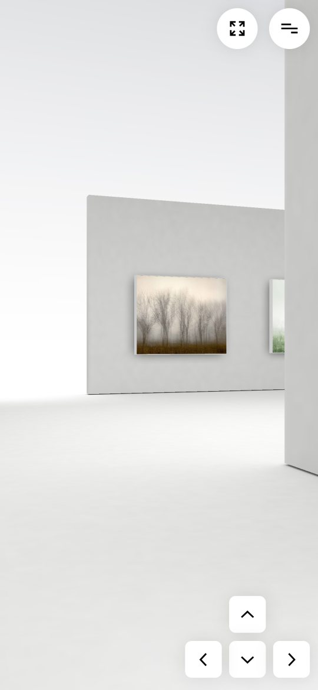
Kunstmatrix · סיור
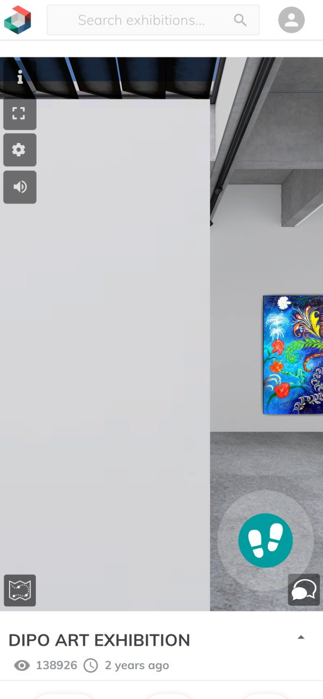
Artsteps · סיור
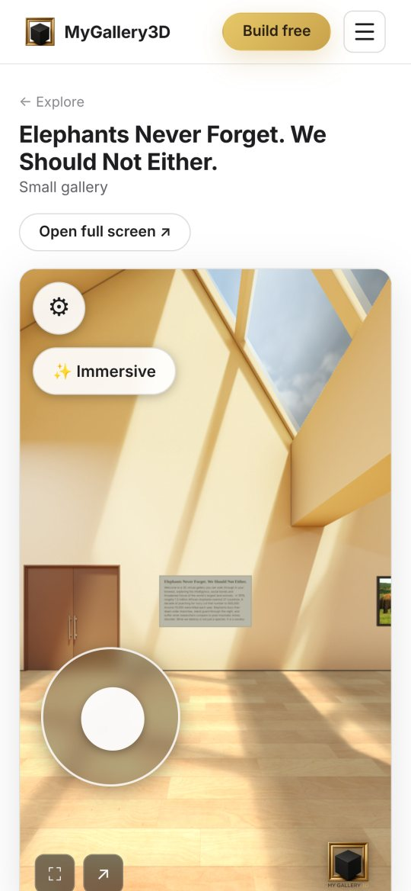
MyGallery3D · סיור
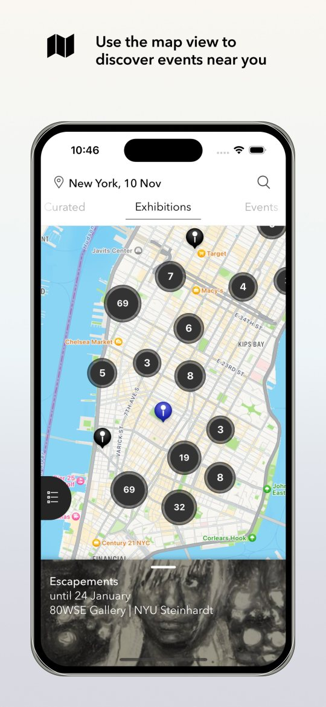
ArtRabbit · מפה
התוכן של Open Studio בצילומים כולל אמני הדגמה בדויים (ליה מורן, נועה בן‑ארי ועוד), כדי לראות את האפליקציה מלאה. Ritual והעבודות של אלעד אמיתיים.
החזון
מה אנחנו בונים, במשפט אחד
אנשים עוקבים אחרי אמנים כמו בספוטיפיי: אחרי העבודות שלהם, התערוכות שלהם והחיים בסטודיו, ואמנות פלסטית יוצאת מהגלריות ומעולם מביני העניין אל הטלפון של כולם.
מה המשתמש רואה כשהוא פותח את האפליקציה
קודם כל את האמנים שהוא עוקב אחריהם: התערוכות שלהם, העבודות החדשות שלהם.
אחר כך תוכן שאולי מתאים לו: אמנים ותערוכות שעוד לא הכיר.
הכול נקי, שקט ומוכר, כמו ספוטיפיי. האמנות במרכז, לא הממשק.
מה האמן מקבל
סיור וירטואלי בתערוכה אמיתית שלו, שנבנה מצילומי ההצבה, כך שגם מי שלא הגיע יכול להסתובב בה.
בהמשך: חללים דיגיטליים ווירטואליים שלא קיימים במציאות, תערוכות חדשות, חיבורים בין אמנים ותערוכות קונספט.
מקום לשתף את הלייב של היצירה (וידאו, תהליך, סטורי) בעמוד שלו, כחלק מהעבודה ולא כפיד.
חמש השאלות שבדקנו בכל פלטפורמה
מסך ראשון: מה רואים כשנכנסים? אמנות, או שיווק?
עמוד אמן ומעקב: אפשר לעקוב אחרי אמן ולראות מה חדש אצלו?
עמוד תערוכה: מה אפשר לעשות עם תערוכה (לשמור, לבוא, לשתף)?
הסיור: איך נראה ומרגיש החלל הווירטואלי? האם זו התערוכה האמיתית?
מה קורה עכשיו ולידי: פתיחות, מפה, תערוכות לפי מיקום.
בקצרה: אף אחת מהשש לא עושה את שני הדברים יחד. הכלים לסיורים (Kunstmatrix, Artsteps, Arte, MyGallery3D) בונים חללים גנריים מתבניות, ואין בהם מעקב אחרי אמנים כמו בספוטיפיי. ArtRabbit עוזרת למצוא תערוכות אמיתיות, אבל אין בה סיור. CUR8 היא היום בכלל פלטפורמת כרטיסים ואירועים. Open Studio מחברת: מעקב אחרי אמנים + התערוכה האמיתית כחלל שאפשר להיכנס אליו.
מפת השוק
מי הם בכלל
פלטפורמה
מה זה
למי
מעקב אחרי אמנים
סיור בתערוכה אמיתית
מה קורה עכשיו / מפה
איפה
Kunstmatrix
בניית תערוכות תלת‑ממד בחדרים מתבניות, קטלוג Art.Spaces, סיור מודרך
גלריות, אמנים, מוסדות חינוך
—
—
—
אתר
Artsteps
בניית חללי תלת‑ממד בחינם + קהילה (לייקים, צפיות, תגובות)
יוצרים, מורים, סטודנטים
חלקי
—
—
אתר + אפליקציה
Arte
בניית גלריה תלת‑ממדית באייפון/אייפד, קריינות קולית, AR
אמנים, אוצרים
—
—
—
אפליקציה
MyGallery3D
בינה מלאכותית בונה גלריה מקישור לחנות או לתיק עבודות; קנייה מתוך החלל
אמנים שמוכרים אונליין
—
—
—
אתר
ArtRabbit
רשימות של תערוכות אמיתיות בעולם, מפה, שמירה, "ראיתי", מעקב אחרי אמנים וגלריות
קהל אמנות, עולם הגלריות
✓
—
✓
אתר + אפליקציה
CUR8
היום: מכירת כרטיסים וארגון אירועים וחוויות ("Make your moment")
מפיקי אירועים
—
—
—
אתר
Spotify
המודל לחוויה: בית אישי, מעקב אחרי אמנים, עמוד אמן נקי
כולם
✓
—
—
אפליקציה
Open Studio
מעקב אחרי אמנים כמו בספוטיפיי + סיור בתערוכה האמיתית, שנבנה מצילומי ההצבה + מפה ופתיחות
כל מי שאוהב אמנות, ואמנים
✓
✓
✓
אפליקציה לטלפון
תיקון לגבי CUR8: בהשוואה הקודמת היא הוצגה כפלטפורמת אמנות. היום האתר שלה מציג מכירת כרטיסים וארגון אירועים ("Buy tickets", "Resend tickets"), ומקורות אחרים מתארים אותה ככלי לאספני אמנות דיגיטלית. בכל מקרה, היא לא מתחרה ישירה.
המשבצת הריקה: אין אף פלטפורמה עם ✓ גם במעקב אחרי אמנים וגם בסיור בתערוכה אמיתית. זה המקום של Open Studio.
1 · המסך הראשון
מה רואים כשנכנסים
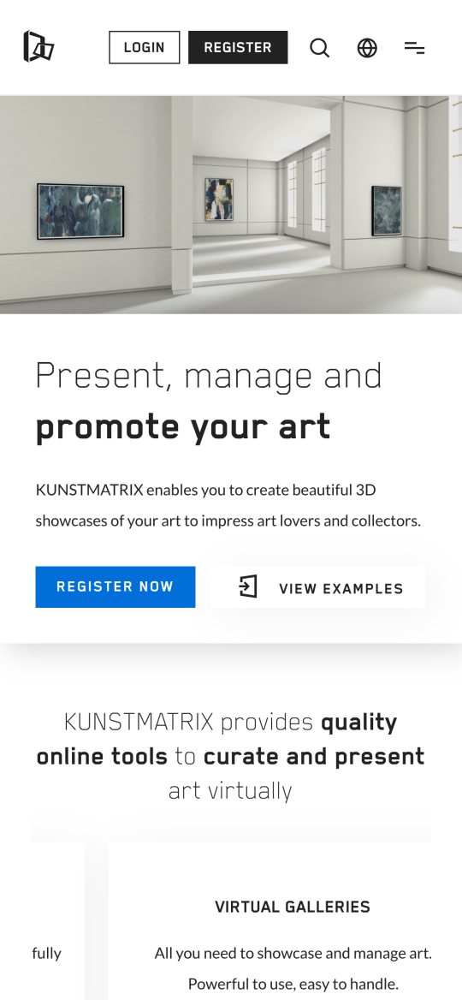
Kunstmatrix
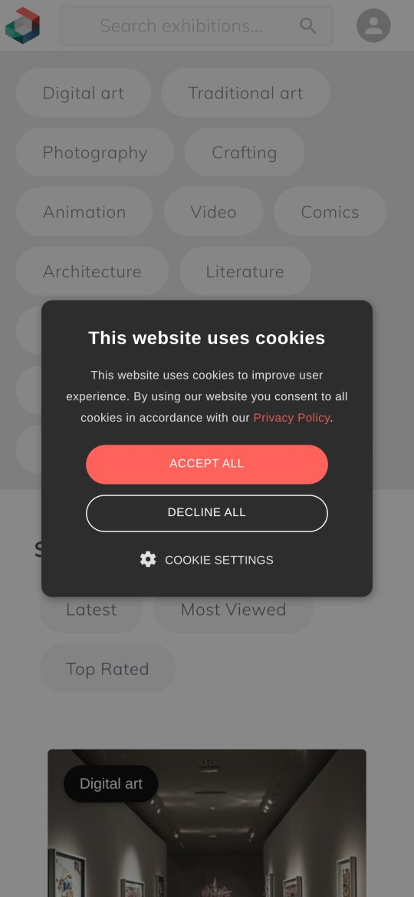
Artsteps
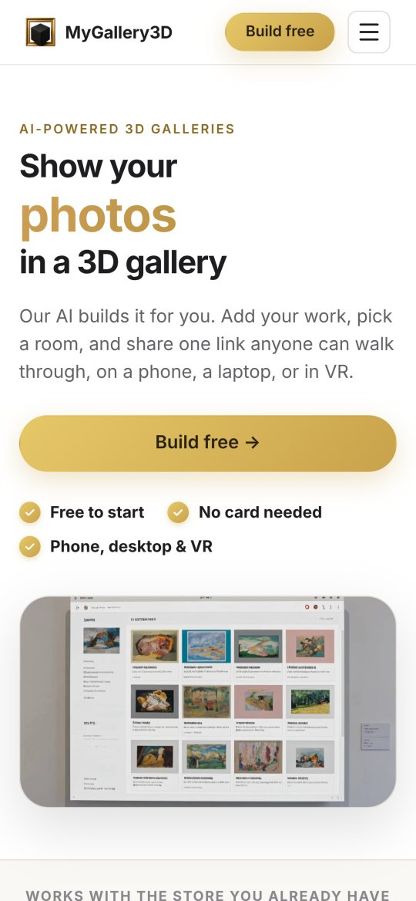
MyGallery3D
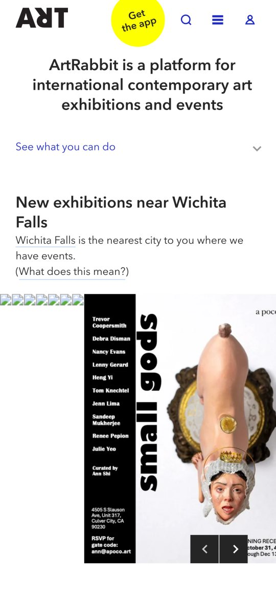
ArtRabbit
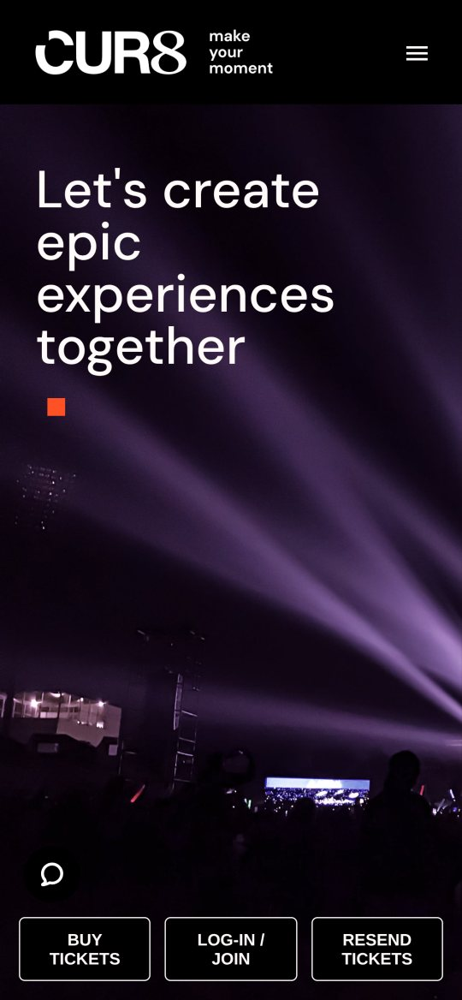
CUR8Open Studio
איך זה נראה
ארבע מתוך השש פותחות בדף שיווק לאמנים: "Register now", "Build free", "Let's create epic experiences". ב‑Artsteps הטלפון נפתח עם חלון עוגיות ופרסומת ל‑Metasteps מעל הכול. ArtRabbit היחידה שפונה לקהל, אבל זיהתה מיקום אוטומטי והציגה תערוכות ב‑Wichita Falls.
איך זה מרגיש
כמו להיכנס לחנות כלים, לא לגלריה. המבקר צריך להבין לבד איפה האמנות. אצלנו המסך הראשון הוא כבר אמנות: התערוכה שמוצגת עכשיו בתמונה מלאה, ומיד אחריה האמנים.
מה לוקחים
לא לפתוח בשום חלון קופץ.
המיקום של ArtRabbit ("ליד" + בחירת עיר) הוא רעיון טוב, אבל רק במפה ובאישור המשתמש. כך זה כבר אצלנו.
ההרשמה לאמנים נשארת למטה ("For artists"), לא בראש הדף.
2 · הבית
הבית כמו בספוטיפיי
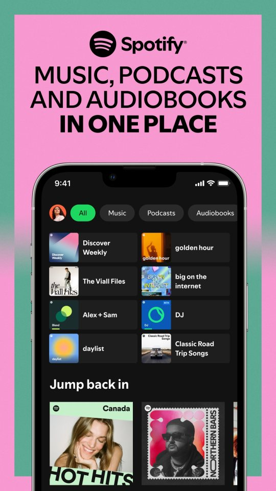
Spotify · בית
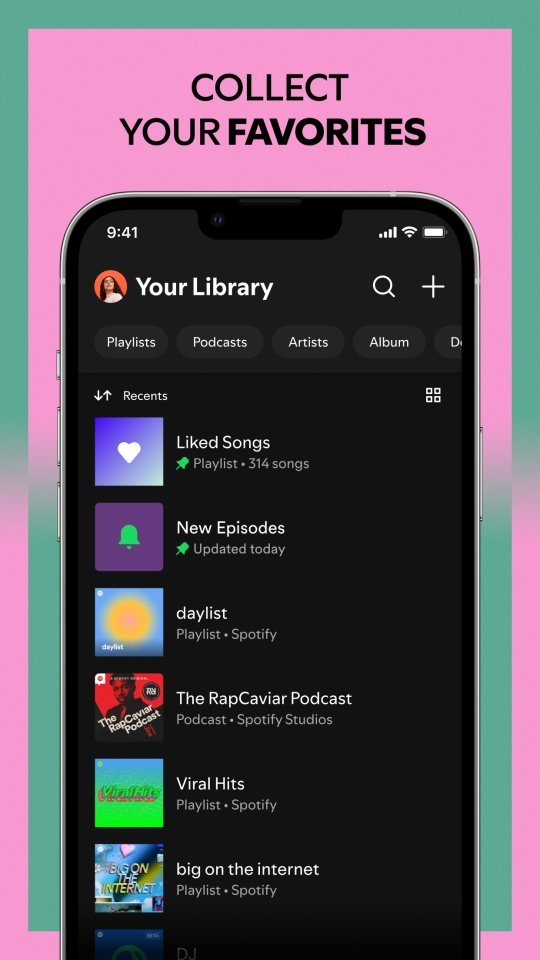
Spotify · חיפוש
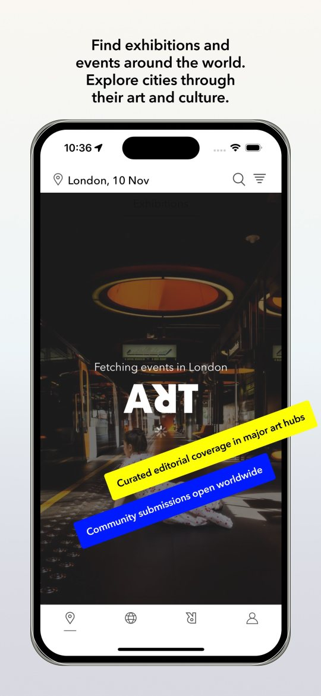
ArtRabbit · אפליקציה
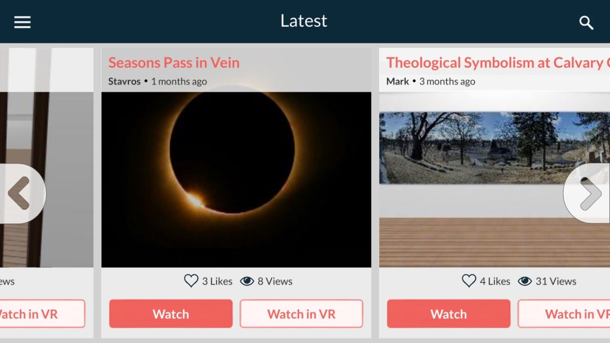
Artsteps · LatestOpen Studio · ביתOpen Studio · אמנים
איך זה נראה
בספוטיפיי: שורת סינון (All, Music, Podcasts), רשת של 8 דברים אחרונים לגישה מהירה, ושורות גלילה הצידה ("Jump back in", "Made for you"). אין טקסט מיותר, רק תמונות ושמות. ב‑Artsteps הבית הוא רשימת "Latest" עם לייקים וצפיות, כמו פיד.
איך זה מרגיש
ספוטיפיי מרגישה אישית: "זה שלי", הדברים שאני חוזר אליהם. אצלנו הבית כבר בנוי משורות גלילה ונקי, ולשונית Artists מציגה קודם את מי שאתה עוקב אחריו ומה רץ אצלו עכשיו.
מה לוקחים
רשת גישה מהירה בראש הבית: האמנים והתערוכות שחזרת אליהם לאחרונה.
שורת "בשבילך" עם שם אישי, למשל "אמנים כמו ליה מורן".
חיפוש לפי עולמות (ציור, טקסטיל, דיגיטלי, תערוכות פתוחות) כמו "Explore your genres".
3 · עמוד אמן
עמוד אמן ומעקב
Spotify · Queen
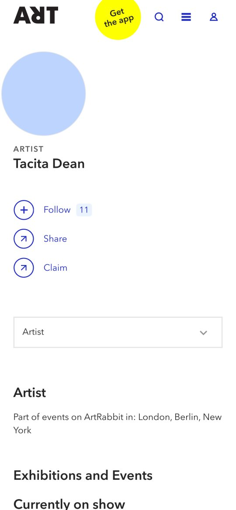
ArtRabbit · Tacita Dean
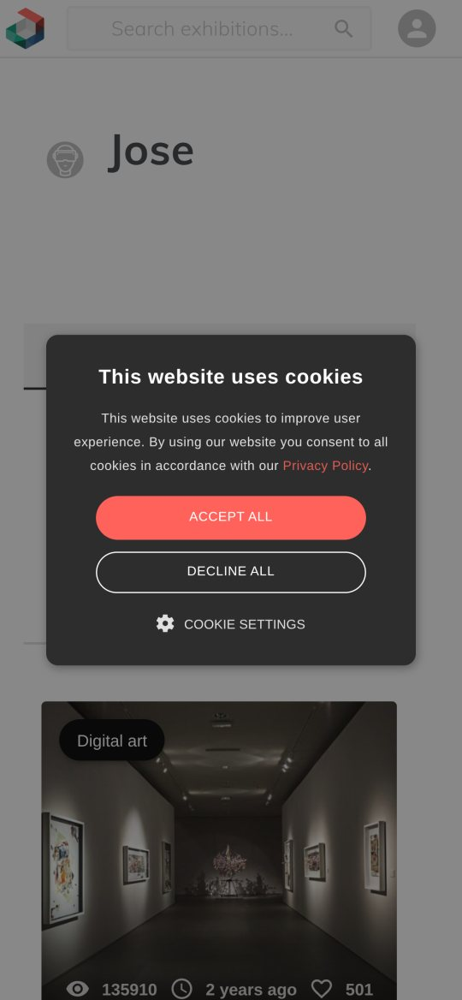
Artsteps · פרופילOpen Studio · ליה מורן
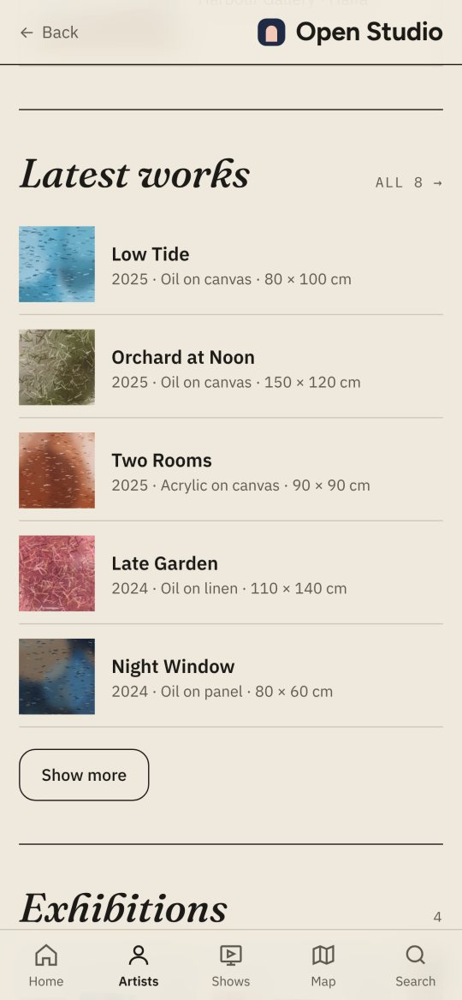
Open Studio · עבודות
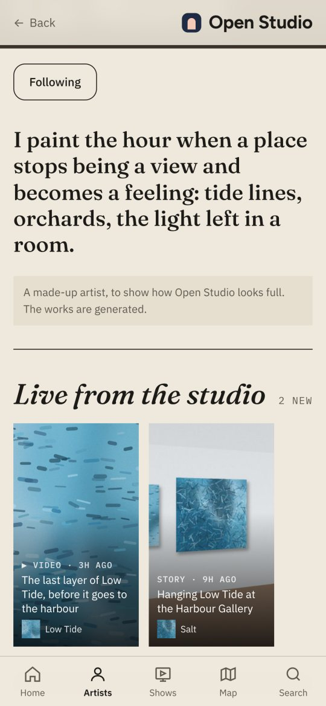
Open Studio · מהסטודיו
איך זה נראה
ב‑Spotify: תמונה גדולה, שם, מספר מאזינים, כפתור Follow, ו‑"Popular" עם חמישה שירים ואחריהם "Popular releases" בגלילה הצידה. ב‑ArtRabbit: עיגול צבע במקום תמונה, Follow עם 11 עוקבים ורשימת תערוכות. ב‑Artsteps: שם, עוקבים ותערוכות של המשתמש.
איך זה מרגיש
בספוטיפיי מבינים מהר מי האמן ומה הכי שווה לשמוע ממנו. העמוד שלנו בנוי עכשיו באותו היגיון:
Follow
Follow
Popular · 5
Latest works · 5 + Show more
Popular releases
Exhibitions בגלילה
On tour
On view now
Clips
Live from the studio
מה לוקחים
"Fans also like": שורת "אמנים קרובים" בסוף עמוד האמן. חסרה אצלנו.
מספר עוקבים ליד השם, כשיהיו משתמשים אמיתיים.
כפתור "נגן" גדול: אצלנו זה "היכנס לתערוכה" כשיש סיור.
4 · הלייב של היצירה
מהסטודיו: וידאו וסטורי, רק בעמוד האמן
Open Studio · Live from the studio
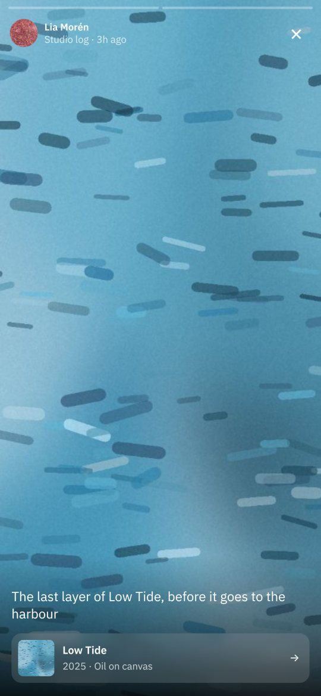
Open Studio · יומן הסטודיו
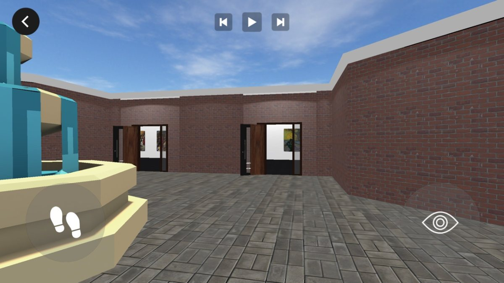
Artsteps · סיור מודרך באפליקציה
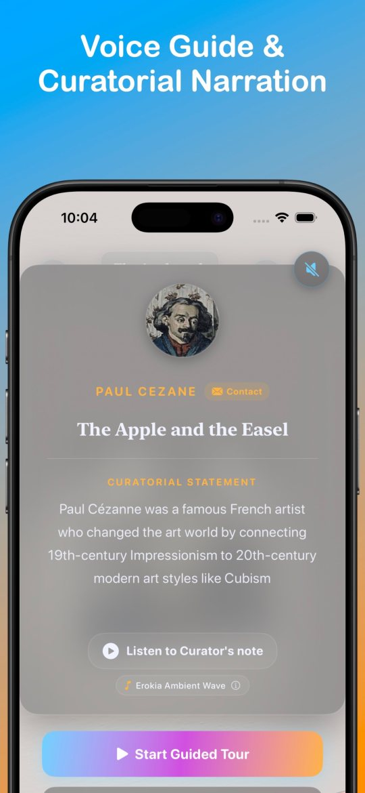
Arte · קריינות קולית
איך זה נראה אצלנו
שורה של סרטונים וסטוריז אנכיים בעמוד האמן. כל אחד קשור ליצירה: "השכבה האחרונה של Low Tide" עם כרטיס היצירה בתחתית. נפתח במסך מלא, אחד אחרי השני.
במה זה שונה
באינסטגרם הסטורי נעלם בפיד ומנותק מהעבודה. ב‑Spotify ה‑Clips קצרים ומחוברים לשיר. אצלנו כל סרטון מוביל ליצירה עצמה, והכול נשאר בעמוד האמן כיומן של העבודה. אצל המתחרים אין דבר כזה: Arte מציעה קריינות קולית בתוך הסיור, ו‑Artsteps מציעה סיור מודרך שמתנגן לבד בתוך החלל.
מה לוקחים
קול של האמן (מ‑Arte): הקלטה קצרה לכל עבודה, שאפשר לשמוע גם בתוך הסיור.
"תהליך" בעמוד היצירה: ציר זמן קצר מהסקיצה ועד התלייה.
5 · עמוד תערוכה
מה אפשר לעשות עם תערוכה
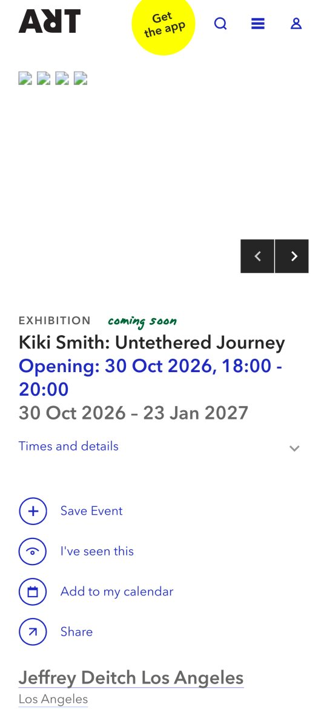
ArtRabbit · Kiki Smith
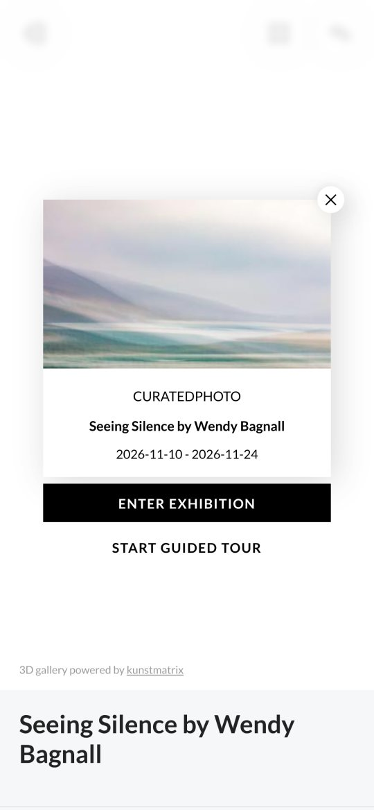
Kunstmatrix · Seeing Silence
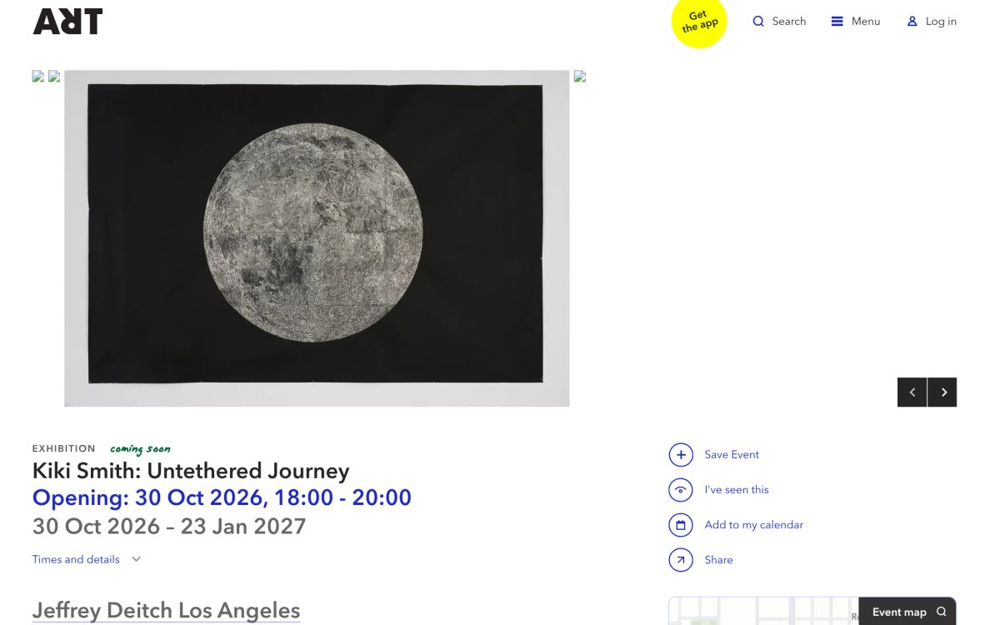
ArtRabbit · מחשבOpen Studio · Low Tide (ערב פתיחה)
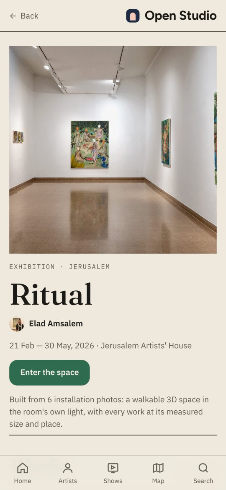
Open Studio · Ritual
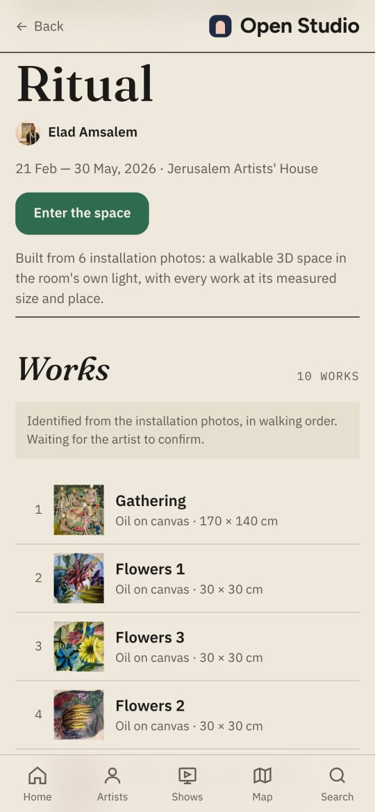
Open Studio · העבודות כאלבום
איך זה נראה
ArtRabbit: תמונה, תאריכים, "Opening: 30 Oct 18:00" ורשימת פעולות: Save Event, I've seen this, Add to my calendar, Share. Kunstmatrix: כרטיס עם שני כפתורים, "Enter exhibition" ו‑"Start guided tour".
איך זה מרגיש
ArtRabbit שימושית מאוד, אבל מרגישה כמו לוח מודעות. Kunstmatrix מרגישה כמו כניסה למשחק. אצלנו תערוכה היא אלבום: עטיפה, אמן, ורשימת עבודות ממוספרת כמו שירים. תערוכה שרצה עכשיו מקבלת את עיצוב ערב הפתיחה, עם כתובת, שעות ואירועים.
מה לוקחים
שמירה ו‑הוספה ליומן של פתיחה (מ‑ArtRabbit).
"הייתי שם": מסמן ביקור, וזה בסיס להמלצות.
"סיור מודרך" (מ‑Kunstmatrix): אצלנו קיים ככפתור Play במצב Works. שווה להבליט אותו בעמוד התערוכה.
6 · הסיור
הסיור הווירטואלי: תבנית מול התערוכה האמיתית
KunstmatrixArtstepsMyGallery3D
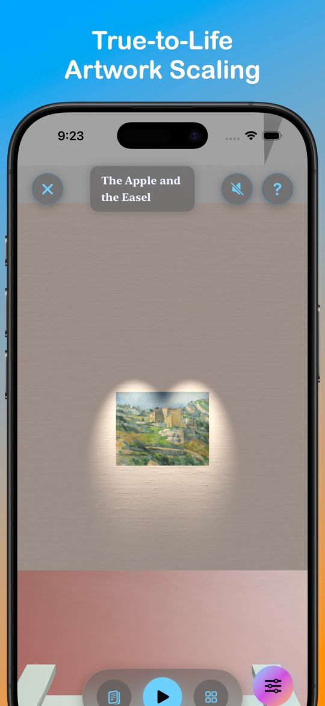
ArteOpen Studio · Ritual
איך זה נראה
אצל כולם החלל הוא תבנית: קופסה לבנה ריקה (Kunstmatrix), אולם בטון וקירות לבנים (Artsteps), לופט עם אור שמש מצויר (MyGallery3D). התמונות "מודבקות" על הקירות. אצלנו החדר נבנה מצילומי ההצבה של Ritual: הרצפה המבריקה, הקשתות, האור, וכל עבודה במידה ובמקום האמיתי שלה.
איך זה מרגיש
בתבנית מרגישים בתוך משחק מחשב, ואין רגע של "הייתי בתערוכה". המסכים עמוסים בהדרכה: חלון "How to?" (Kunstmatrix), כפתור צעדים ודחיפה להוריד אפליקציה (Artsteps), חלון "How to walk" (MyGallery3D). אצלנו: ג'ויסטיק, מפה קטנה בפינה, ושלושה מצבים (Walk, Works, Photos).
מה לוקחים
הסבר קצר בכניסה הראשונה (MyGallery3D עושה את זה נקי): שלוש שורות ו‑"Got it".
מצב Immersive: מזיזים את הטלפון כמו חלון. אצלנו זה כפתור הג'ירו.
לא לוקחים: תבניות. ההבדל שלנו הוא שהחדר אמיתי. בהמשך, לחללים דיגיטליים שלא קיימים במציאות, כן נצטרך חדרים מעוצבים.
בגרסת המחשב (בתיקייה compare): ב‑Kunstmatrix ו‑Artsteps החלל תופס חלק מהמסך ומסביבו תפריטים ופרסומות.
7 · מה קורה עכשיו ולידי
פתיחות, מפה ותערוכות לפי מיקום
ArtRabbit · מפה
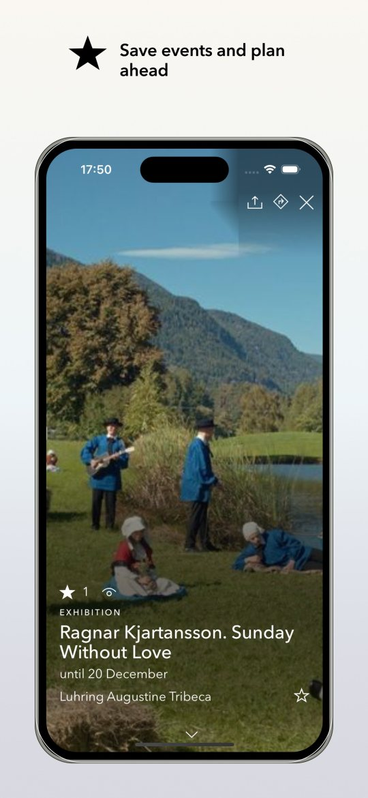
ArtRabbit · שמירה ותכנון
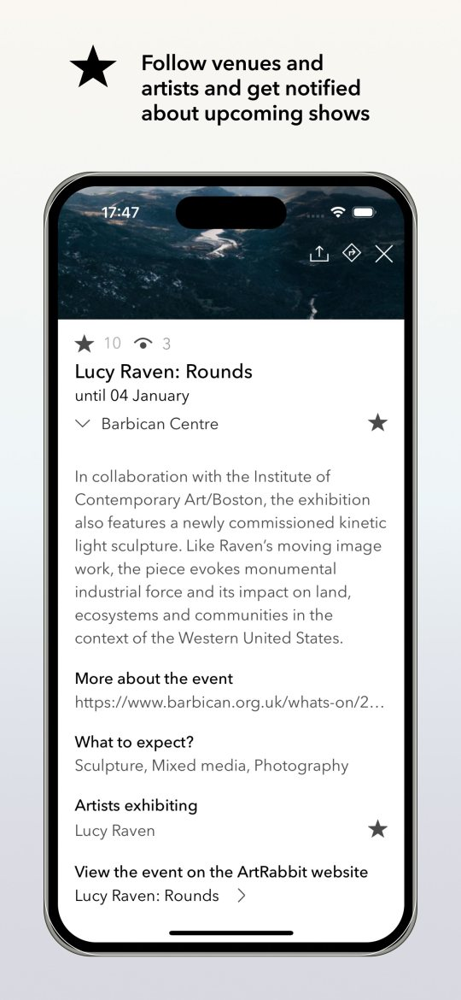
ArtRabbit · מעקב אחרי גלריות
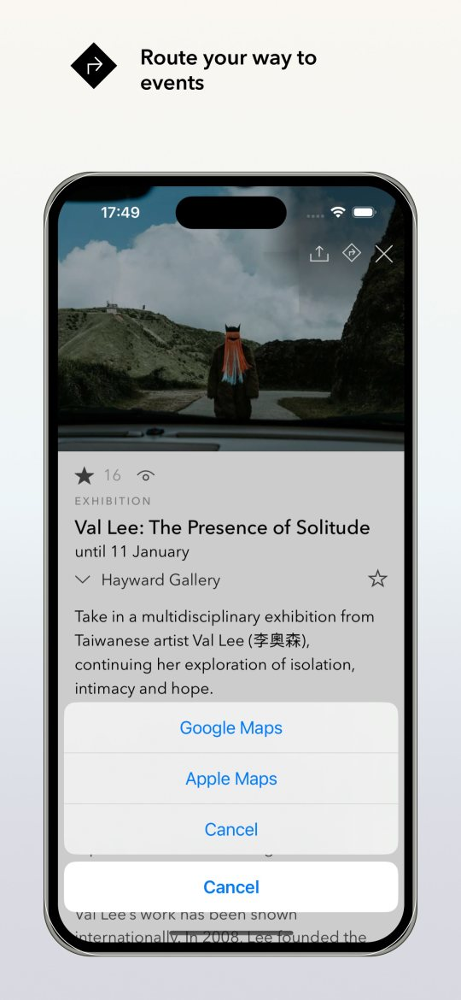
ArtRabbit · מסלולOpen Studio · ShowsOpen Studio · Map
איך זה נראה
ArtRabbit היא היחידה מהשש שעושה את זה: מפת חום של תערוכות שמתפרקת לסיכות, "פתוח עכשיו / ליד / מאוחר יותר", שמירה, ניווט עם Google/Apple Maps, ומעקב אחרי גלריות עם התראות. אצלנו: Shows בעיצוב ערב פתיחה (הערב, השבוע, אונליין, סיורים) ו‑Map בעיצוב "על הקירות".
איך זה מרגיש
ArtRabbit מרגישה כמו מדריך עירוני עמוס פרטים. Shows אצלנו מרגיש כמו הזמנה לאירוע: "Opening tonight · 20:00". ובמפה, מי שלא יכול להגיע מקבל "Walk Ritual from home, in 3D". את זה אין לאף אחד.
מה לוקחים
ניווט: כפתור "איך מגיעים" שפותח את אפליקציית המפות.
מסלול אמנות (Saturday art walk): כמה תערוכות קרובות במסלול אחד.
התראה כשאמן או גלריה שעוקבים אחריהם פותחים תערוכה.
8 · בשביל האמן
הכלים לאמן: לבנות תערוכה
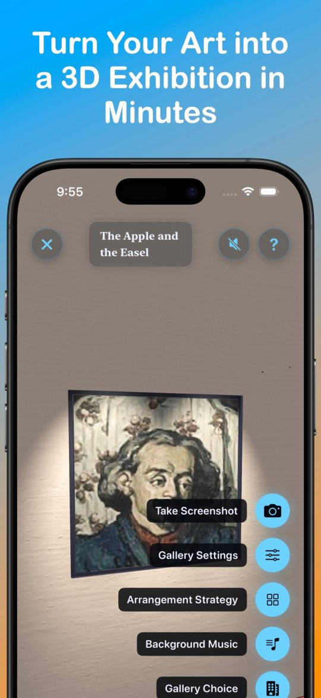
Arte · תערוכה בדקות
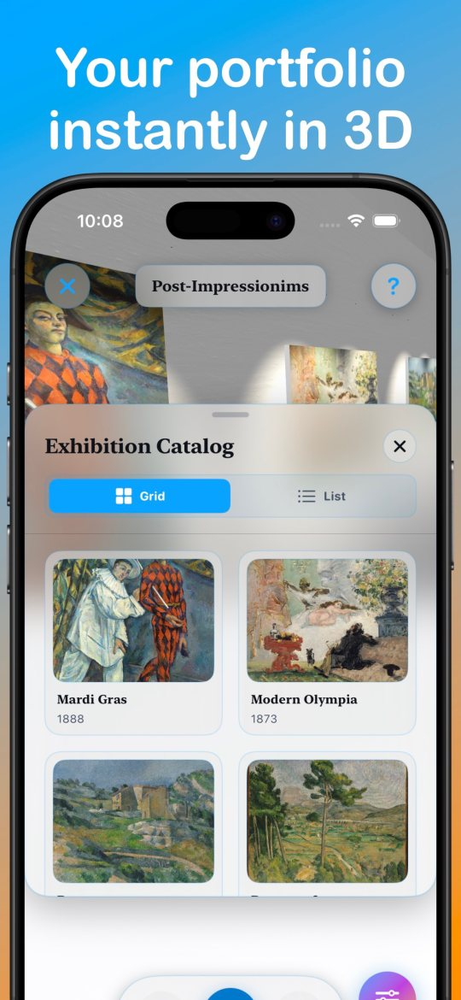
Arte · תיק עבודות
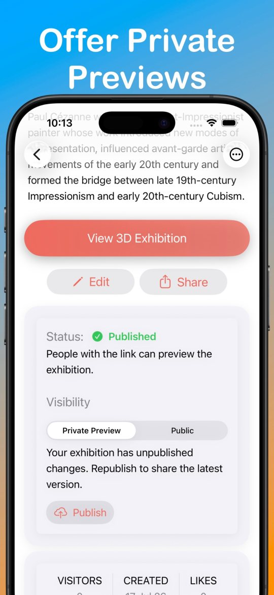
Arte · תצוגה פרטיתMyGallery3D · Build freeKunstmatrix
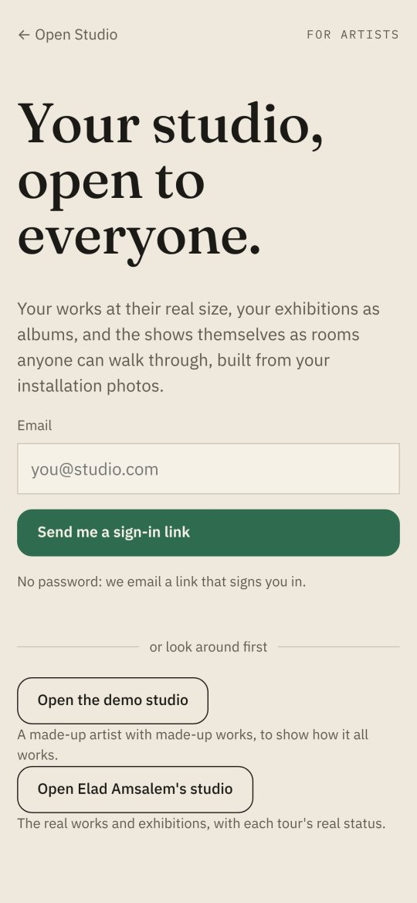
Open Studio · For artists
איך זה נראה
Arte: בונים באייפון או באייפד, עם קריינות, מידות אמיתיות ו"תצוגה פרטית" לאספנים. MyGallery3D: מדביקים קישור לחנות, והבינה המלאכותית בונה גלריה. Kunstmatrix: מערכת מקצועית עם מחסן עבודות וטקסטים לקיר. אצלנו: "Your studio, open to everyone", עם כניסה במייל בלי סיסמה ואמן הדגמה להסתכל.
איך זה מרגיש
אצל כולם האמן "בונה" חלל, עובד עם קירות ומיקומים. אצלנו האמן מעלה צילומי הצבה של תערוכה שכבר הייתה, והחדר נבנה לבד. פחות עבודה, ותוצאה אמיתית יותר.
מה לוקחים
תצוגה פרטית בקישור (Arte): לשלוח תערוכה לאספן לפני שהיא ציבורית.
ייבוא מקישור (MyGallery3D): להביא עבודות מאתר או מאינסטגרם של האמן.
קטלוג עבודות (Kunstmatrix): כל עבודה יודעת באילו תערוכות הייתה. אצלנו זה כבר קיים בעמוד היצירה.
סיכום
מה ייחודי לנו, ומה כדאי לאמץ
שלושה דברים שרק Open Studio עושה
התערוכה האמיתית כחדר. הסיור נבנה מצילומי ההצבה: אותו חדר, אותו אור, כל עבודה במקומה. אצל כל השאר זו תבנית.
אמנים כמו בספוטיפיי. עוקבים, ורואים קודם את מה שחדש אצלם: עבודות, תערוכות, והלייב מהסטודיו.
מהפתיחה של הערב ועד מה שנגמר. Shows ומפה לתערוכות שרצות, וסיור תלת‑ממד למי שלא הספיק.
השקט הוא חלק מהחוויה: בלי חלונות קופצים, בלי פרסומות, בלי מילים מיותרות. זה ההבדל הכי מורגש מול המתחרים בטלפון.
מה כדאי לאמץ, לפי סדר עדיפות
#
מה
מאיפה
1
שמירת תערוכה + הוספה ליומן + "הייתי שם"
ArtRabbit
2
התראה כשאמן שעוקבים אחריו פותח תערוכה
ArtRabbit, Spotify
3
"אמנים קרובים" בסוף עמוד האמן
Spotify
4
רשת גישה מהירה בראש הבית
Spotify
5
הסבר קצר בכניסה הראשונה לסיור
MyGallery3D
6
קול של האמן לכל עבודה
Arte
7
"איך מגיעים" ומסלול אמנות במפה
ArtRabbit
8
תצוגה פרטית בקישור לאספנים
Arte
מקורות: צילומי מסך מהאתרים (kunstmatrix.com, artsteps.com, artrabbit.com, cur8.com, mygallery3d.com, open.spotify.com) ומדפי האפליקציות ב‑App Store (Artsteps, ArtRabbit, Arte, Spotify), 28 באוקטובר 2026. סקירות: Common Sense Education, Better Posters, Luminous Landscape, פורום three.js. כל הצילומים שמורים בתיקייה studio/design/compare.